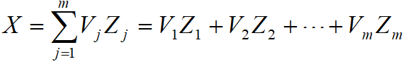

EOF分析（PCA主成分分析）
1.详细介绍EOF分析方法（也称PCA主成分分析）
经验正交函数（Empirical Orthogonal Functions，EOFs）方法最早是由统计学家Pearson在1902年提出的，之后由Lorenz（1956）引入气象问题分析当中。机器学习领域常称作主成分分析（Principal Component Analysis，PCA）。
EOF分析是将一个气象场分解为一个空间函数和一个时间函数的乘积，即 X = VZ 的形式
其中，X 是气象场，V 是空间函数，Z 是时间函数
如果我们将一个气象场的多次观测值记为
其中，下标 m 表示不同站点或不同格点，下标 n 表示时间
那么存在这样一个时间函数 V 和空间函数 Z
使得 X = VZ， 即
其中 i = 1,2,…,m t = 1,2,…,n 表示变量场中第 i 个格点上的第 t 次观测值，可以看做是p个空间函数 $v_{ik}$ 和时间函数 $z_{ki}$ 的线性组合
因此 t 时刻的空间场可以表示为
或者
其中
是第 j 个典型场，如果令
那么我们就得到气象场的表达式为
其中 $V_j$ 就称为 X 的EOF第 j 模态，$Z_j$ 就称为第 j 模态的时间序列
2.EOF分解的计算
我们知道 $XX^T = VZZ^TV^T$
令 $A = XX^T$
显然矩阵 $A_{m{\times}m}$ 是一个实对称矩阵，由实对称矩阵的性质， $A_{m{\times}m}$ 可被正交相似对角化
即存在正交矩阵 $P_{m{\times}m}$ 使得 $P^TAP = \Lambda$, 其中 $\Lambda_{m{\times}m}$ 为矩阵 $X_{m{\times}n}$ 特征值组成的对角矩阵
计算矩阵 $A_{m{\times}m}$ 的特征值 $\lambda_{1,…,m}$ 以及特征向量 $V_{m{\times}m}$
将特征向量 $V_{m{\times}m}$ 按特征值从大到小排序，第一个特征向量，也即 $V_{m{\times}m}$ 的第1列为
以此类推，第 2,3,…,p 列对应
对应的 $Z_{m{\times}n}$ 每行数据就是对应每个特征向量的时间系数，，其他类推
这样，我们就将 $X_{m{\times}n}$ 分解成了空间函数 $V_{m{\times}m}$ 和时间函数 $Z_{m{\times}n}$ 的乘积
此时，$V_{m{\times}m}$ 满足
$Z_{m{\times}n}$ 满足
也即“正交”的由来
对于$X \approx \hat{X} = V_{m{\times}p} \times Z_{p{\times}n}$
$\hat{X}$为拟合场
可以证明其误差为
第i个特征向量对 $X_{m{\times}n}$ 变量场的贡献率
前p个特征向量对 $X_{m{\times}n}$ 变量场的贡献率